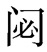

于越[90]故称无敌于天下，海岳精液，善生俊异，[91]后先络驿，展其殊才；其民复存大禹[92]卓苦勤劳之风，同勾践[93]坚确慷慨之志，力作治生，绰然足以自理。世俗递降，精气播迁，则渐专实利而轻思理，乐安谧而远武术，鸷夷乘之，爰忽颠陨，全发之士，系踵蹈渊，而黄神啸吟，民不再振。辫发胡服之虏，旃裘引弓之民，翔步于无余[94]之旧疆者盖二百余年矣。已而思士笃生，上通帝旨，转轮[95]之说，弥沦大区，国士桓桓[96]，则首举义旗于鄂。诸出响应，涛起风从，华夏故物，光复太半，东南大府，亦赫然归其主人。越人于是得三大自由[97]，以更生于越，索虏[98]则负无量罪恶，以底于亡。民气彭张，天日腾笑，孰善赞颂，庶猗伟之声，将充宙合矣。顾专制久长，鼎镬为政，以聚敛穷其膏髓，以禁令制其讥平，瘠弱槁枯，为日滋永，桎梏顿解，卷挛尚多，民声寂寥，群志幽

，岂以为匹夫无与于天下，尚如戴朔北之虏也。共和之治，人仔于肩，同为主人，有殊台隶[99]。前此罪恶，既咸以归索虏，索虏不克负荷，俱以陨落矣。继自今而天下兴亡，庶人有责，使更不同力合作，为华土谋，复见瘠弱槁枯，一如往日，则番番良士[100]，其又将谁咎耶？是故侪伦则念之矣，独立战始，且垂七旬，智者竭虑，勇士效命，而吾侪庶士，坐观其成，傥不尽一得之愚，殆自放于国民之外。爰立斯报，就商同胞，举文宣意，希翼治化。纾自由之言议，尽个人之天权，促共和之进行，尺政治之得失，发社会之蒙覆，振勇毅之精神。灌输真知，扬表方物，凡有知是，贡其颛愚，力小愿宏，企于改进。不欲守口，任华土更归寂寞，复自负无量罪恶，以续前尘；庶几闻者戒勉，收效毫厘，而吾人公民之责，亦借以尽其什一。猗此于越，故称无敌于天下，鸷夷纵虐，民生槁枯，今者解除，义当兴作，用报古先哲人征营治理之业。唯专制永长，昭苏非易，况复神驰白水，孰眷旧乡，返顾高丘，正哀无女。[101]呜呼，此《越铎》之所由作也！注 释
[89] 本篇最初发表于1912年1月3日绍兴《越铎日报》创刊号，署名黄棘。原无标点。
《越铎》，即《越铎日报》，1912年1月3日由越社创办于绍兴。1927年3月停刊。早期曾得到鲁迅的支持。
[90] 于越 晋代贺循《会稽记》：“少康封其少子，号曰‘于越’。越国之称始于此。”
[91] 海岳精液，善生俊异 晋代虞预《会稽典录·朱育》：“（虞）翻对曰：‘夫会稽上应牵牛之宿，下当少阳之位；……山有金木鸟兽之殷，水有鱼盐珠蚌之饶。海岳精液，善生俊异。’”
[92] 大禹 亦称夏禹，我国古代夏后氏部落的领袖，夏朝的建立者，以治平洪水为后人传颂。《史记·夏本纪》：禹东巡“至于会稽而崩”，葬会稽山。
[93] 勾践 春秋末年越国国君。他被吴国打败后，“十年生聚，十年教训”，卧薪尝胆，发愤图强，终于战胜了吴国。
[94] 无余 传说是越国的始祖。汉代赵煜《吴越春秋》卷六：“禹以下六世而得帝少康。少康恐禹祭之绝祀，乃封其庶子于越，号曰无余。”
[95] 转轮 意即变革。原为佛家语，即转法轮，《法华文句》：“转佛心中化他之法，度入他心，名转法轮。”
[96] 桓桓 威武的样子。《诗经·周颂·桓》：“桓桓武王，保有厥士。”
[97] 三大自由 指孙中山所说的“人民之集会自由、出版自由、思想自由”（见《民权初步·自序》）。
[98] 索虏 原是南北朝时南朝对北朝的蔑称，《资治通鉴·魏纪》文帝黄初二年：“宋魏以降，南北分治，各有国史，互相排黜。南谓北为索虏，北谓南为岛夷。”元代胡三省注：“索虏者，以北人辫发，谓之索头也。”
[99] 台隶 原为古代社会等级中属于奴隶的两个等级（见《左传》昭公七年），这里泛指被奴役的人。
[100] 番番良士 《尚书·秦誓》：“番番良士，旅力既愆，我尚有之。”番番，白发苍苍。番同皤。
[101] 白水等语，出于屈原《离骚》：“朝吾将济于白水兮，登阆风而緤马。忽反顾以流涕兮，哀高丘之无女。”“陟陞皇之赫戏兮，忽临睨夫旧乡。”白水，神话中的水名，据说源出昆仑山，人饮其水不死。